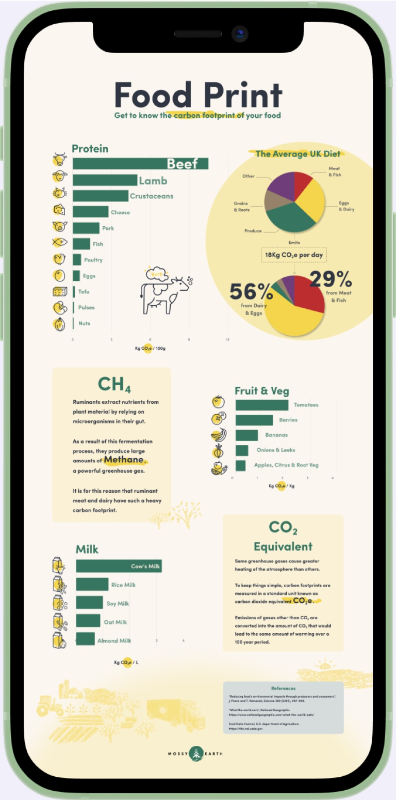
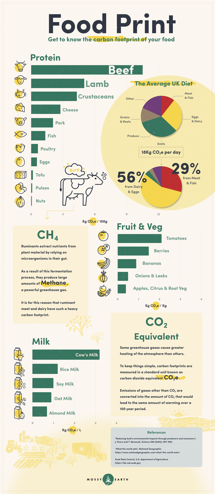
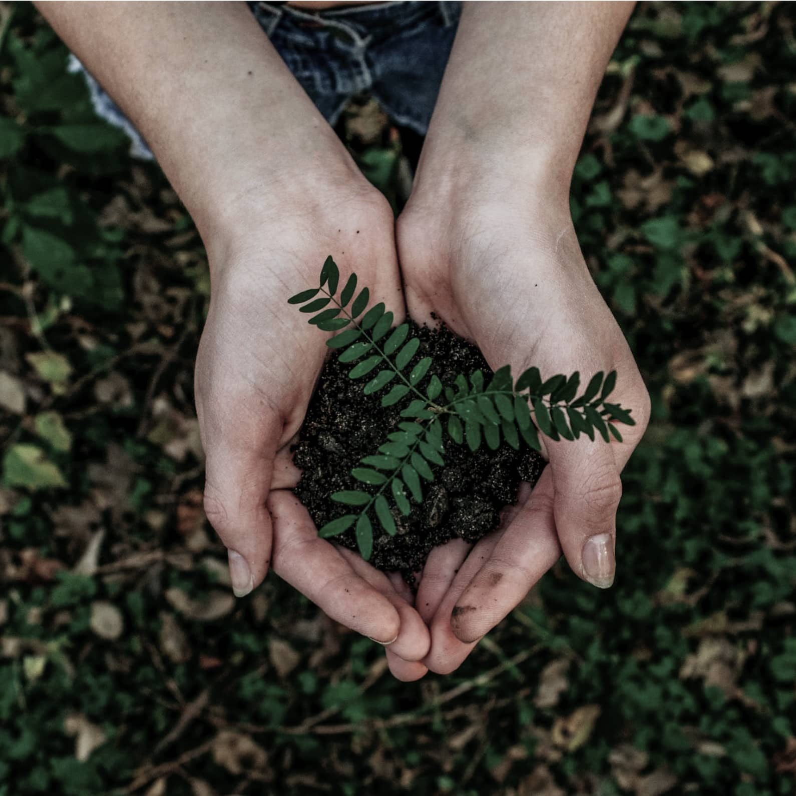
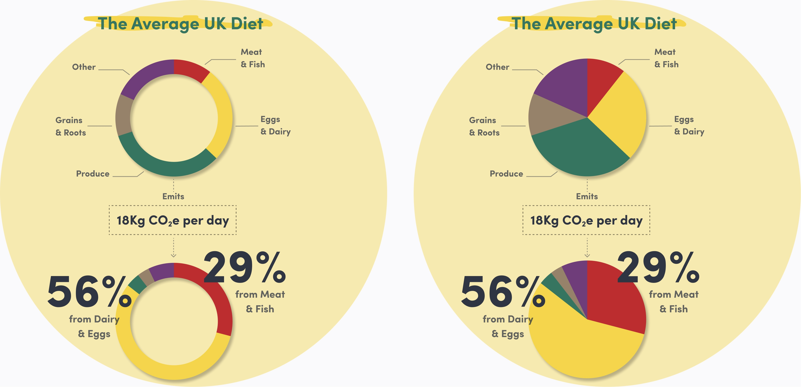

Project: Food Print
Role: Visual design, Illustration
Project: May 2021 - June 2021
This project leaned heavily on the design process as I explored how to incorporate the various techniques to develop and improve a digital product. What jumped out to me the most was how crucial the feedback from users was. I discovered that, after iterating the designs to the best of my ability, having people use and test the prototype was what opened new directions to be explored. This step fostered more creativity and stoped me from getting stuck on a solution too soon. It helped me drop features early on, like the group ticket, because I realised users didn't find them useful. And finally, it helped me better empathise with the people that might use the Cinematic app and create solutions that addressed their problems and needs.

Mossy Earth is a team dedicated to restoring Nature and fighting climate change. Their projects range from restoring wild ecosystems, planting native trees and aiding in the conservation of endangered species.
The infographic was done in collaboration with one of Mossy Earth’s conservation biologists. To kickoff the project we had a talk about the work he does for Mossy Earth and thoughts on using visuals to better express quantitative data. He explained how they were looking for a way to communicate the findings from different studies in a captivating visual way.

Problem statement
How can we help people achieve a more sustainable lifestyle and make informed decisions regarding their diet?
1) Spread awareness on personal carbon footprint
2) Share data in a tangible way
3) Compare the environmental impact of different food types
4) Compare the environmental impact of different food groups within a diet
We narrowed down what to include in the infographic by considering what would help someone make a change in their diet. Foods were grouped according to their function within the diet, for example, we looked at how would different sources of protein compare or what would be the difference between drinking cow’s milk or a plant based alternative. We wanted the options to feel tangible and to help someone who is looking for opportunities to take action.

After receiving feedback from Mossy Earth’s brand manager we worked on some revisions. The goal was to “clean up” the communication, simplify unnecessary elements or remove them, create a more structured hierarchy of information and highlight key elements. This was very helpful to keep the focus on the content and find solutions that better served the reader.
Before
After